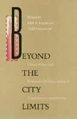

<body bgcolor="#FFFFFF" text="#000000" link="#0000FF" vlink="#CC0000" alink="#CC0000"><center><hr width="350" size="1" align="center" noshade>Challenging the notion that there is a single, global process of economic restructuring to which cities must submit<hr width="350" size="1" align="center" noshade><p><a href="https://cdcshoppingcart.uchicago.edu/Cart/ChicagoBook.aspx?ISBN=9780877227335&&PRESS=temple" target="_top">Buy this book!</a> | <a href="https://cdcshoppingcart.uchicago.edu/Cart/Cart.aspx?PRESS=temple" target="_top">View Cart</a> | <a href="https://cdcshoppingcart.uchicago.edu/Cart/Cart.aspx?PRESS=temple" target="_top">Check Out</a></p><p></p></center><!--none//--><h1>Beyond the City Limits</h1>
<H2>Urban Policy and Economic Restructuring in Comparative Perspective</H2>
<h3>edited by John R. Logan and Todd Swanstrom</h3>
<P>cloth 0-87722-733-0 $49.95, Dec 90, <FONT COLOR=#990033>Out of Print</FONT>
<br>paper 0-87722-944-9 $35.95, Nov 91, <FONT COLOR=#990033>Available</FONT>
<br>Electronic Book 1-43990-163-5 $35.95 <FONT COLOR=#990033>Out of Print</FONT>
<BR> 288 pp
</P><BLOCKQUOTE><I>"In their introduction to <I>Beyond the City Limits</I>, Logan and Swanstrom directly challenge the notion of economic restructuring processes as single, uniform, monolithic global processes. They stress not only the variability of these global processes and the consequent potential for political discretion and choice but the need to link more systematically the changes in production processes with changes in 'broader social and political processes.'"</I>
<br>&#151<b><I>Urban Affairs Quarterly</I></b><I></I></BLOCKQUOTE>
<p>This book challenges the notion that there is a single, global process of economic restructuring to which cities must submit. The studies in this volume compare urban development in the United States, Western Europe, and Japan, demonstrating that there is significant variety in urban economic restructuring. The contributors emphasize that the economic forces transforming cities from industrial concentrations to postindustrial service centers do not exist apart from politics: all nation-states are heavily involved in the restructuring process.
<BR>&nbsp;<h2>Reviews</h2>
<p><I>"This book [makes] a positive contribution to the growing literature on the urban role in economic growth and regeneration."</I>
<br>&#151<b><I>Choice</I></b>
<BR>&nbsp;<h2>Contents</h2><P>
<p>Preface
<p><b>Part I: Introduction</b>
<br>1. Urban Restructuring: A Critical View &#150 John R. Logan and Todd Swanstrom
<p><b>Part II. Urban Policy: National and International Comparisons</b>
<br>2. Political Paradoxes of Urban Restructuring: Globalization of the Economy and Localization of Politics? &#150 Edmond Preteceille
<br>3. Industrial Restructuring, State Intervention, and Uneven Development in the United States and Japan &#150 Richard C. Hill
<br>4. Political Responses to Urban Restructuring: The British Experience under Thatcherism &#150 Michael Parkinson
<p><b>Part III. The Limits and Possibilities of Local Policy</b>
<br>5. Economics, Politics, and Development Policy: The Convergence of New York and London &#150 Susan Fainstein
<br>6. Postindustrialism with a Difference: Global Capitalism in World Class Cities &#150 H. V. Savitch
<br>7. Urban Deals in Comparative Perspective &#150 Harvey L. Molotch
<br>8. Space for Progressive Local Policy: Examples from the U.S. and the U.K. &#150 Pierre Clavel and Nancy Kleniewski
<p><b>Part IV. Reflections</b>
<br>9. Beyond the City Limits: A Commentary &#150 Saskia Sassen
<br>10. Theoretical Methods in Comparative Urban Politics &#150 John Walton
<p>About the Contributors
<br>Subject Index
<br>Author Index
</P><BR>&nbsp;<H2>About the Author(s)</H2>
<P><b>John R. Logan</b> is Professor of Sociology at the State University of New York at Albany.</P>
<P><b>Todd Swanstrom</b> is Associate Professor of Political Science at the State University of New York at Albany and the author of <I><a href="355_reg.html" target="_top">The Crisis of Growth Politics: Cleveland, Kucinich, and the Challenge of Urban Populism</a></I> (Temple).</P>
<P>Contributors: Pierre Clavel, Susan Fainstein, Richard Child Hill, Nancy Kleniewski, Harvey L. Molotch, Michael Parkinson, Edmond Preteceille, Saskia Sassen, H. V. Savitch, John Walton, and the editors.</P>
<BR><H2>Subject Categories</H2>
<p><A HREF="/tempress/urban.html" TARGET="_top">Urban Studies</a>
</p>
<BR><h2 class="inpageheading">In the series</H2>
<P><I><a href="http://www.temple.edu/tempress/conflicts.html" onMouseOver="window.status='Click for other books in this series!'; return true;" onMouseOut="window.status=''; return true;" target="_top">Conflicts in Urban and Regional Development</a></i>, edited by John R. Logan and Todd Swanstrom.
</p><p><i>Conflicts in Urban and Regional Development</i>, edited by John R. Logan and Todd Swanstrom, includes books on urban policy and issues of city and regional planning, accounts of the political economy of individual cities, and books that compare policies across cities and countries.</p>
<p align="center"><a href="https://cdcshoppingcart.uchicago.edu/Cart/ChicagoBook.aspx?ISBN=9780877227335&&PRESS=temple" target="_top">Buy this book!</a> | <a href="https://cdcshoppingcart.uchicago.edu/Cart/Cart.aspx?PRESS=temple" target="_top">View Cart</a> | <a href="https://cdcshoppingcart.uchicago.edu/Cart/Cart.aspx?PRESS=temple" target="_top">Check Out</a></p><p><font face="Arial" size="1"><a href="copyright.html" onMouseOver="window.status='Web Copyright Policy';return true;" onMouseOut="window.status=''" title="Web Copyright Policy">&copy;</a> 2015 <a href="http://www.temple.edu" target="new" onMouseOver="window.status='Link to Temple University home page';return true;" onMouseOut="window.status=''" title="Link to Temple University home page">Temple University</a>. All Rights Reserved. http://www.temple.edu/tempress/titles/746_reg.html</font></p>